Adaptive Query Execution: changing the unread part of a query
component index | SQL physical planner
AQE lets the driver JVM revise a physical plan after learning what an exchange
actually produced. It changes the next join or shuffle read; it does not migrate
a running task, split a live reducer, or acquire YARN containers. An AQE query
stage wraps a SQL subtree that can be materialized. The core
DAGScheduler still owns jobs, scheduler stages, task attempts,
and recovery of missing shuffle outputs.
Flow at a glance
- Finished shuffle: Map tasks write the shuffle blocks for both sides of a join.
- Driver: AQE spots an oversized orders partition and splits its next read into slices.
- Join tasks: Each task for that partition reads a different slice but the same regions partition.
Key distinction: AQE changes how later tasks read existing blocks; it does not split a running task.
Show the animated flow

The driver feedback loop
- Wrap. With
spark.sql.adaptive.enabled=true, InsertAdaptiveSparkPlan checks
the plan. An existing exchange or a child distribution that might require one is
sufficient reason to consider AQE; a plain scan need not be wrapped. Supported
nodes must have logical links. AdaptiveSparkPlanExec owns the initial and current
physical plans, a stage-ID counter, and isFinalPlan. Its AdaptiveExecutionContext
is tied to the QueryExecution, not shared across unrelated applications.
Admission and logical-link guards.
- Materialize ready work.
withFinalPlanUpdate walks up from the leaves. Once
child stages are ready, an ordinary exchange becomes ShuffleQueryStageExec or
BroadcastQueryStageExec. materialize() returns a future: a shuffle submits
a map-stage job; a broadcast submits the broadcast build.
With exchange reuse enabled, a canonical plan can reuse a stage result rather
than repeat the work. A completion event sets the stage's result or error.
Result state · exchange reuse.
- Read the right statistics.
ShuffleQueryStageExec.mapStats exposes
MapOutputStatistics(shuffleId, bytesByPartitionId): approximate total shuffle
bytes for each reduce partition, aggregated across mappers. These are not key
frequencies, task durations, or raw rows. Separately, getRuntimeStatistics
supplies the exchange's size and row count; computeStats marks materialized
statistics isRuntime=true. A shuffle with zero input partitions has no map
statistics. LogicalQueryStage falls back to logical estimates if no physical
statistics are available. Map-size accuracy ·
shuffle statistics and RDD interface · logical statistics.
- Replan and finish. The driver replaces matching logical subtrees with
LogicalQueryStages, invalidates old statistics, reruns the adaptive optimizer
and physical planner, and compares costs. It adopts a cheaper candidate, or a
different candidate of equal cost; otherwise it keeps the current plan.
If an eligible build side turns out to be small, the new join can use a broadcast.
When dependencies are ready the result stage runs the action's handler; AQE
marks the plan final and returns that result. Event loop and cost gate ·
replanning and invalid-plan handling.
Worked example: a hot orders.region_id
Assume an inner sort-merge join that stays a shuffled join, skew handling enabled,
and exchanges introduced to satisfy the join. These numbers illustrate the rule,
not a cluster measurement.
| Step |
What happens to reduce partition 3 |
| Detect |
The orders-side sizes are [32, 32, 32, 640, 32] MiB. The median is 32 MiB. With factor 5 and an absolute threshold of 256 MiB, the cutoff is max(5 * 32, 256) = 256 MiB. 640 > 256 qualifies; exactly 256 would not. Each side uses its own median. |
| Split |
OptimizeSkewedJoin.tryOptimizeJoinChildren asks ShufflePartitionsUtil.createSkewPartitionSpecs for the individual map-block sizes for reducer 3. It groups contiguous mapper ranges into PartialReducerPartitionSpecs. A single indivisible block, missing map status, or a forbidden replication direction can prevent a split. |
| Pair |
If the left splits into three ranges and the right does not split, three tasks each read a disjoint slice of left partition 3 and the same right partition 3. If both split, every left/right range pair is needed. For a left outer join, splitting the preserved left is legal; replicating that left side across right splits could duplicate unmatched rows. |
| Execute |
After distribution validation, AQEShuffleReadExec passes the chosen specs to getShuffleRDD. It reads already-written map output differently; it does not rewrite the map files. Coalescing does the opposite for small adjacent reducer partitions. Forced skew optimization can accept an extra exchange to restore a required distribution. |
Skew cutoffs and pairings · range construction ·
validation and shuffle-origin guards · coalescing.
Cost, failures, and evidence
Splitting can shorten a long tail at the price of more tasks and repeated reads of
the other side. It cannot eliminate genuine join-output explosion. Coalescing can
reduce task-launch overhead but also parallelism. If a candidate plan is invalid,
AQE can keep the old plan; a required stage materialization failure is different:
after core scheduling has reported failure, AQE attempts to cancel outstanding
exchanges and propagates the error.
Inspect the SQL UI for the completed action, not just explain before it runs.
Compare the initial and final plan (isFinalPlan=true); look for SortMergeJoin(skew=true),
AQEShuffleRead marked skewed or coalesced, and the metrics number of skewed
partitions versus number of skewed partition splits. Then compare shuffle
read sizes and task duration in the linked scheduler stages.
Shuffle-read metrics and execution · failure cleanup.